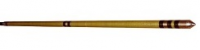
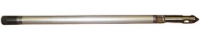
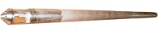
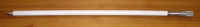

ОБЗОР РАЗДЕЛАЭлектрокаротаж
Отличительные особенности скважинных приборов
- обеспечивают все измерения за один спуско-подъём, возможность одновременного измерения и передачи на поверхность измеренных параметров всеми зондами во всём диапазоне;
- цифровая передача информации;
- отсутствие калибровки и настройки перед записью;
- отсутствие наземной панели;
- минимальные затраты времени при проведении каротажа;
- использование одножильного геофизического кабеля для работы с широким спектром каротажных станций;
«КП-51Э»

- Градиент-зонд A0.9M0.1N – 0,2…5000 Ом•м.
- Потенциал-зонд N0.9M0.1A – 0,2…1000 Ом•м.
- Зонд ПС – 0,5…1000 мВ.
- Исп.: D48мм/L2,3м/9.1кг/ -40+80град.С/20мПа/1жила
«КП-52Э»
 Представляет собой прибор, снабженный классическим кабель-зондом для проведения исследований методами КС,ПС.
Представляет собой прибор, снабженный классическим кабель-зондом для проведения исследований методами КС,ПС.
- Градиент-зонд A2.0M0.5N – 0,2…5000 Ом•м.
- Потенциал-зонд N2.0M0.5A – 0,2…1000 Ом•м.
- Зонд ПС – 0,5…1000 мВ.
- Исп.: D48мм/L7,1м/7.4кг/ -40+80град.С/20мПа/3жил(для ПС)
«Зонд МСК»
Зонд каротажный «ЗК-01МСК» обеспечивает проведение методов скважинной электроразведки при поисках, оценке и разведке рудных месторождений.- Метод электродных потенциалов (МЭП ) Регистрируется разность потенциалов между электродами М и N (выполнены из цинка), перемещаемым по скважине; электрод М касается стенки скважины, электрод N расположен по центру её.
При соприкасании электрода М с рудным телом, обладающим электронной проводимостью, разность потенциалов резко увеличивается, так как электрод М воспринимает электродный потенциал этого тела, значительно отличающийся то потенциала электрода.
Этот метод ставиться для выделение рудных тел, обладающих электронной проводимость.
- Метод самопроизвольной поляризации (ПС) заключается в самопроизвольном образовании в скважине и вблизи неё поля электрических токов. Электродвижущая сила, под действием которой возникают токи ПС, генерирует разность потенциалов между буровым раствором против пласта и буровым раствором против вмещающих пород при условии, что в сечении скважины, соответствующем границе пласта, помещен изоляционный слой, препятствующий циркуляций токов.
- Метод скользящих контактов (МСК) это один из методов электрического каротажа измеряет сопротивление тока между электродами А (щётка) и Б(электрод заземление), используется для обнаружение сульфидных зон (повышение значение), зоны кварцевания отмечаются (минимальными значениями тока) и т.д.
«КП-61ЭРТ»
- Градиент-зонд A0.9M0.1N – 0,2…5000 Ом•м.
- Потенциал-зонд N0.9M0.1A – 0,2…1000 Ом•м.
- Зонд ПС – 0,5…1000 мВ.
- Резистивиметр – 0,3…80 Ом•м.
- Термометр – 0…80ºС (с разрешением 0,05ºС)
- Исп.: D48мм/L2,3м/9.1кг/ -40+80град.С/20мПа/1жила
«КП-71ЭГТР»

- Градиент-зонд A0.9M0.1N – 0,2…5000 Ом•м.
- Потенциал-зонд N0.9M0.1A – 0,2…1000 Ом•м.
- Зонд ПС – 0,5…1000 мВ.
- Резистивиметр - 0,3…80 Ом•м.
- Термометр - 0…80ºС (с разрешением 0,05ºС)
- Зонд ГК - 0…150 мкр/час;
- Исп.: D48мм/L2,3м/10.9кг/ -40+80град.С/20мПа/1жила
«КП - 81ЭГ»
- Градиент-зонд A0.9M0.1N – 0,2…5000 Ом•м.
- Потенциал-зонд N0.9M0.1A – 0,2…1000 Ом•м.
- Зонд ПС – 0,5…1000 мВ.
- Зонд ГК1 мощности экспозиционной дозы (МЭД) гамма-излучения (ГК1) – 5…450 мкР/час,
- зонд ГК2 МЭД гамма-излучения – 450…14.000мкР/час,
- энергетический порог детектора зонда ГК - 20-30 кЭв
- Исп.: D48мм/L2,3м/18.5кг/ -40+80град.С/20мПа/1жила
«КП-91ЭГ»
- Градиент-зонд A0.9M0.1N – 0,2…5000 Ом•м.
- Потенциал-зонд N0.9M0.1A – 0,2…1000 Ом•м.
- Зонд ПС – 0,5…1000 мВ.
- Зонд ГК (ФЭУ-102, детектор СДН17-1.18.160) – 0-150 мкр/час;
- Энергетический порог детектора зонда ГК …20-30 кЭв
- Исп.: D48мм/L2,3м/9.2кг -40+80град.С/20мПа/1жила
«КП-140ГТР»

- Зонд ГК1 МЭД – 5…450 мкР/час, +/- 10%/20-30 кЭв;
- Зонд ГК2 МЭД – 3500…14000мкР/час, +/- 20%; (постоянная времени - 2 сек, выбор зонда ГК - перемычкой)
- Термометр: 0…120ºС, +/-1ºС / 0,002ºС/1.5 сек.
- Резистивиметр: 0,1…16 См/м/ +/- 5%.( измерение с помощью индукционного датчика проточно-погружного типа).
- Исп.: D60мм/L2,5м/29.8кг/-40+120град.С/15мПа/1жила
«КП-140ГТР-01»
- Зонд ГК1 МЭД – 5…450 мкР/час, +/- 10%/20-30 кЭв;
- Зонд ГК2 МЭД – 450…14000мкР/час, +/- 30%; (постоянная времени - 2 сек, выбор зонда ГК - перемычкой)
- Термометр: 0…120ºС, +/-1ºС / 0,002ºС/1.5 сек.
- Резистивиметр: 0,1…16 См/м/ +/- 10%.( измерение с помощью индукционного датчика проточно-погружного типа).
- Исп.: D60мм/L1,7м/29.8кг/-40+120град.С/15мПа/1жила
«КП-240ГТР»

- зонд ГК - 0…150 мкр/час, 5 %;
- энергетический порог детектора зонда ГК - 20-30 кЭв
- резистивиметр - 0,3…80 Ом*м, 5 %;
- температурный зонд - от –10 до +80С, 1С разрешающая способность канала термометра 0,05 оС.
- Исп.: D42мм/L1,4м/7.85кг/-40+85град.С/20мПа/1жила
«КП-241ГТРЛ»
- аналог «КП-240ГТР» с добавлением функции измерения электромагнитной локации муфтовых соединений труб отношение амплитуды выходного сигнала локатора муфт к шуму - не менее 5:1
«КП-242»
- Прибор, разработанный по заказу ЗАО «Далур»,предприятия уранового холдинга «АРМЗ», обеспечивает проведение исследований методом токового каротажа и двухдиапазонным датчиком естественной гамма-радиоактивности горных пород (ГК)
«КП-244»
-
Прибор обеспечивает одновременное измерение за один спуско-подъем трех геолого-технологических параметров: уровня мощности экспозиционной дозы естественного гамма-излучения пород, удельного сопротивления и температуры скважинной жидкости в интервале исследования.
- 1.Пределы измерения:
для зонда ГК, мкр/сек 0…0,83;
для резистивиметра, Ом*м 0,3…80;
для температурного зонда, C –10…+80.
- 2. Допускаемая основная относительная погрешность измерения для зонда ГК, в диапазоне рабочих температур, % - не более +/- 20.
- 3. Допускаемая основная абсолютная погрешность измерения температуры, в диапазоне рабочих температур, ºС - не более +/- 1, разрешающая способность термометра - 0,05 оС.
- 4. Допускаемая основная относительная погрешность измерения для зонда резистивиметра, в диапазоне рабочих температур, % - не более +/- 5.
- 5. Условия работы прибора:
рабочий диапазон температур окружающей среды 85 С.
наибольшее гидростатическое давление 20 МПа.
6. Напряжение постоянного тока питания прибора, В 150(-10 /+50)В.
- 7. Габаритные размеры прибора , мм:
диаметр по охранному кожуху 42;
длина без транспортной заглушки 1354;
длина с транспортной заглушкой 1381.
- 8. Масса прибора, кг, не более 7,85.
- 9. Тип головки скважинного прибора «КП–245ГТР» соответствует ГЗБ3-36- II, ГОСТ 14213
- 10. Прибор «КП-244ГТР» рассчитан на эксплуатацию в условиях, соответствующих:
по механическим воздействиям группе МС2-3 по ГОСТ 26116-84;
по климатическим параметрам группе КС4-2 по ГОСТ 26116-84.
- 11. Срок службы прибора 5 лет.
- 12. Класс безопасности 4Н по НП-016-05.
Технические характеристики
«КП-248ГТР»
- Прибор обеспечивает одновременное измерение за один спуско-подъем трех геолого-технологических параметров: уровня мощности экспозиционной дозы естественного гамма-излучения пород, удельного сопротивления и температуры скважинной жидкости в интервале исследования.
Технические характеристики
- 1.Пределы измерения:
для зонда ГК, мкр/сек 500…8500;
для резистивиметра, Ом*м 0,3…80;
для температурного зонда, C –10…+120.
- 2. Допускаемая основная относительная погрешность измерения для зонда ГК, в диапазоне рабочих температур, % - не более +/- 20.
- 3. Допускаемая основная абсолютная погрешность измерения температуры, в диапазоне рабочих температур, ºС - не более +/- 1, разрешающая способность термометра - 0,05 оС.
- 4. Допускаемая основная относительная погрешность измерения для зонда резистивиметра, в диапазоне рабочих температур, % - не более +/- 5.
- 5. Условия работы прибора:
рабочий диапазон температур окружающей среды 120 С.
наибольшее гидростатическое давление 20 МПа.
6. Напряжение постоянного тока питания прибора, В 150(-10 /+50)В.
- 7. Габаритные размеры прибора , мм:
диаметр по охранному кожуху 42;
длина без транспортной заглушки 1354;
длина с транспортной заглушкой 1381.
- 8. Масса прибора, кг, не более 7,85.
- 9. Тип головки скважинного прибора «КП–245ГТР» соответствует ГЗБ3-36- II, ГОСТ 14213
- 10. Прибор «КП-248ГТР» рассчитан на эксплуатацию в условиях, соответствующих:
по механическим воздействиям группе МС2-3 по ГОСТ 26116-84;
по климатическим параметрам группе КС4-2 по ГОСТ 26116-84.
- 11. Срок службы прибора 5 лет.
- 12. Класс безопасности 4Н по НП-016-05.
«КП-245ГТР»
- Прибор обеспечивает одновременное измерение за один спуско-подъем трех геолого-технологических параметров: уровня мощности экспозиционной дозы естественного гамма-излучения пород, удельного сопротивления и температуры скважинной жидкости в интервале исследования.
Технические характеристики
- 1.Пределы измерения:
для зонда ГК, мкр/сек 0…150;
для резистивиметра, Ом*м 0,3…80;
для температурного зонда, C –10…+80.
- 2. Допускаемая основная относительная погрешность измерения для зонда ГК, в диапазоне рабочих температур, % - не более +/- 20.
- 3. Допускаемая основная абсолютная погрешность измерения температуры, в диапазоне рабочих температур, ºС - не более +/- 1, разрешающая способность термометра - 0,05 оС.
- 4. Допускаемая основная относительная погрешность измерения для зонда резистивиметра, в диапазоне рабочих температур, % - не более +/- 5.
- 5. Условия работы прибора:
рабочий диапазон температур окружающей среды 85 С.
наибольшее гидростатическое давление 20 МПа.
6. Напряжение постоянного тока питания прибора, В 150(-10 /+50)В.
- 7. Габаритные размеры прибора , мм:
диаметр по охранному кожуху 42;
длина без транспортной заглушки 1354;
длина с транспортной заглушкой 1381.
- 8. Масса прибора, кг, не более 7,85.
- 9. Тип головки скважинного прибора «КП–245ГТР» соответствует ГЗБ3-36- II, ГОСТ 14213
- 10. Прибор «КП-245ГТР» рассчитан на эксплуатацию в условиях, соответствующих:
по механическим воздействиям группе МС2-3 по ГОСТ 26116-84;
по климатическим параметрам группе КС4-2 по ГОСТ 26116-84.
- 11. Срок службы прибора 5 лет.
- 12. Класс безопасности 4Н по НП-016-05.
«КП-82БКР»
- Прибор комплексный бокового и радиоактивного каротажа КП82-БКР(современный аналог БКР-3М) предназначен для одновременного измерения кажущегося удельного сопротивления и мощности экспозиционной дозы естественного и рассеянного гамма-излучения при проведении геофизических исследований в скважинах комплексом методов трехэлектродного бокового каротажа (БК), гамма каротажа (ГК) и гамма-гамма каротажа (ГГК) на рудных и угольных месторождениях с одновременной передачей информации в цифровом виде через одножильный бронированный каротажный кабель .
- Диапазоны измерений:
- кажущееся удельное сопротивление роБК - 0.33-20000 Ом*м, при максимальном отношении Ro/Rэ = 30000;
- зонд ГК 5-650 мкР/ч
- зонд ГГК 5-5000 мкР/ч
- Исп.: D48мм/L2,6м(с коротким зондом)/22кг/-40+85град.С/30мПа/1жила
«КП-43ТК»

- Скважинный прибор «КП–43ТК» предназначен для проведения токового каротажа в скважинах с максимальной температурой +85С. Прибор рассчитан на работу совместно с цифровыми регистрирующими комплексами (станциями, лабораториями) через геофизический одно- или трехжильный бронированный кабель.
- Технические характеристики:
- 1. Напряжение постоянного тока питания прибора, В 12 - 20
- 2. Пределы измерения тока, мА …………………………………… 0…200
- 3. Разрешающая способность мкА, …………………………………40
- 4. Условия работы прибора:
- -максимальная температура окружающей среды 85 С.
- -наибольшее гидростатическое давление …………………… 20 МПа.
- 5. Габаритные размеры прибора, мм:
- -максимальный диаметр, мм ……………………………………………не более 36
- -длина без транспортной заглушки, мм………………………… не более 1208
- -длина с транспортной заглушкой, мм……………………………не более 1230
- 6. Масса прибора, кг………………………………………………………… не более 4,2.